Model selection and estimation
Topic 5
Goals
- To select between candidate models by matching theoretical and sample dependence structures.
- To use the ACS and the partial autocorrelation sequence (PACS) to identify the orders of pure \(\mathsf{MA}\) and pure \(\mathsf{AR}\) processes.
- To introduce a formulaic approach to model selection via information criteria (\(\mathsf{AIC}\) and \(\mathsf{BIC}\)).
- To estimate model parameters — the Yule–Walker estimator for \(\mathsf{AR}\) models, and a glimpse of estimation in the mixed \(\mathsf{ARMA}\) case.
Key Equation
\[\boldsymbol{\gamma}_p = \boldsymbol{\Gamma}_p \boldsymbol{\phi} \qquad\Longrightarrow\qquad \widehat{\boldsymbol{\phi}} = \big(\widehat{\boldsymbol{\Gamma}}_p\big)^{-1} \widehat{\boldsymbol{\gamma}}_p\]
1 Introduction
We are now ready to undertake elementary empirical analysis. The reason I describe it as such is not because our analysis will lack in rigour. On the contrary, if you have followed the course up to this point, you have strong foundations. Rather, I use the word ‘elementary’ because we are (for the moment) only equipped to analyse stationary and ergodic time series. This will be our focus throughout this topic.
To begin, let us recall two opening bullet points from earlier:
- Suppose we have a set of time series data, \(\{Y_1, \ldots, Y_T\}\), which we wish to model for whatever reason (e.g. forecasting prices of financial assets, recovering dynamic causal effects of macroeconomic shocks, and so on).
- Since we always want a decent (albeit fundamentally flawed) approximation of reality, we try to pick a model whose defining characteristics match those of the real-life process under scrutiny. In particular, there is a great deal of interest in comparing their second-order moment structures.
Now, we will explore the practicalities of modelling in some detail. A very rough roadmap for the discussion ahead is the following loop:
- Build a toolkit full of models (e.g. \(\mathsf{ARMA}\)).
- Pick a well-matched candidate (e.g. via the ACS).
- Use data to estimate parameters (e.g. via the method of moments).
- Use the fitted model for inference (e.g. a hypothesis test).
- Perform diagnostic checks (e.g. on residuals).
The loop runs from a question about reality (e.g. about markets) through to an insight about reality (e.g. a forecast).
2 Model selection (manual)
Consider the first step in the schematic above. At this point, we have already built up a versatile toolkit of models — at least as far as stationary and ergodic time series are concerned. In particular, we have an arsenal full of causal (and, for any MSc students reading, invertible-in-the-past) \(\mathsf{ARMA}\) models ready for deployment. The next question is how to pick one.
\(\mathsf{MA}(1)\) versus \(\mathsf{AR}(1)\)
To fix ideas, suppose the choice is between the simplest of models we have studied, the \(\mathsf{MA}(1)\) and the \(\mathsf{AR}(1)\) processes. How might we decide which of these two is appropriate? The answer, as expected, lies in the dependence structure.
Below, we plot illustrative examples of the ACS in order to familiarise ourselves with typical \(\mathsf{MA}\) and \(\mathsf{AR}\) model signatures. In the charts, the horizontal axis is always the lag length (truncated to a maximum value of 10) and the vertical axis is always the value of the ACS, which is bounded between \(-1\) and \(1\). (We suppress the negative region when it is unnecessary.)
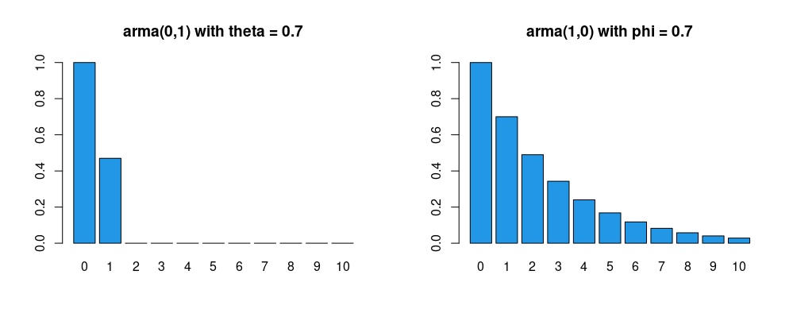
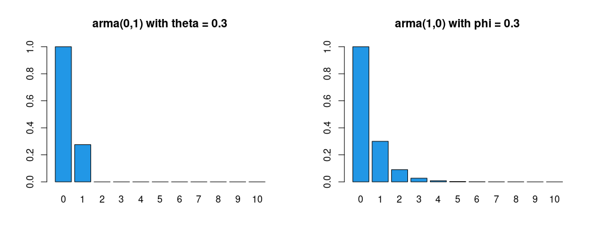
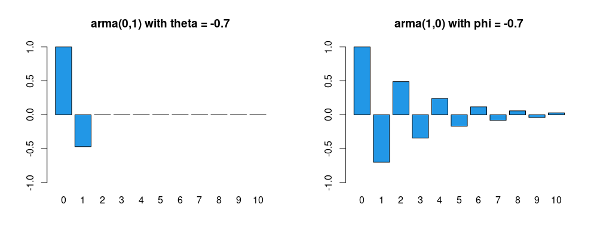
rm(list = ls()); par(mfrow = c(1, 2))
x <- ARMAacf(0, 0.7, lag.max = 10); y <- ARMAacf(0.7, 0, lag.max = 10)
barplot(x, ylim = c(0, 1), main = 'arma(0,1) with theta = 0.7', col = 4)
barplot(y, ylim = c(0, 1), main = 'arma(1,0) with phi = 0.7', col = 4)Remark — think like statisticians, not economists.
- An economist may wish to use an \(\mathsf{MA}(1)\) model for various reasons. For example, economic indicators are affected by a variety of ‘shocks’ such as strikes, government decisions, shortages of key materials, and so on. Such shocks will not only have an immediate effect but may also affect economic indicators to a lesser extent in several subsequent periods, so it is at least plausible that an \(\mathsf{MA}\) process may be justifiable.
- Similarly, an economist may wish to use an \(\mathsf{AR}(1)\) model when there is reason to believe that the value of a variable is influenced by its own values in previous periods. For example, the habit-persistence theory of consumption suggests that consumption depends on the previous period’s consumption, among other things.
- Note that we actually do not want to think about our task as per the above bullet points. It would simply cause confusion if we were to view this material through the ‘structural’ lens of an economist.
- Instead, we think like statisticians, matching model characteristics (specifically, the theoretical ACS) with comparable statistical measures based on real-world data (for example, the sample ACS) to make our modelling decisions.
- We are ‘mercenaries’ in the sense that we hold no desire to justify our decisions from an economic standpoint. Any economic justification, if insisted upon, may be introduced ex post, but not ex ante.
So how do we obtain the sample ACS? Let us discuss this next.
The slide above gives us a mechanism for consistent estimation of the population ACS. The next question is how we do inference — i.e. how we carry out hypothesis tests.
Consider the two simulated examples below. What do you think are the appropriate models?
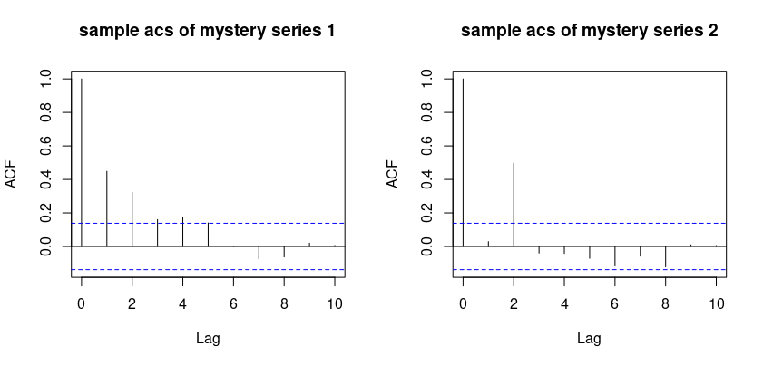
rm(list = ls()); set.seed(232); par(mfrow = c(1, 2))
x <- arima.sim(model = list(order = c(1, 0, 0), ar = 0.5), n = 200)
y <- arima.sim(model = list(order = c(0, 0, 2), ma = c(0, 0.9)), n = 200)
acf_x <- acf(x, 10, type = "correlation", main = 'sample acs of mystery series 1')
acf_y <- acf(y, 10, type = "correlation", main = 'sample acs of mystery series 2')
plot(acf_x); plot(acf_y)Identifying the order of pure \(\mathsf{MA}\) and pure \(\mathsf{AR}\) processes
The ‘trick’ above leads us directly to our next concern: how do we identify \(q\) for an \(\mathsf{MA}(q)\) process, and \(p\) for an \(\mathsf{AR}(p)\) process?
The motivation is clear from the algebraic form of the ACS for an \(\mathsf{MA}(q)\) process, which drops to zero beyond lag \(q\). What about autoregressive series? What can we infer from the ACS about \(p\)? The answer is: “Not much.”
Further intuition comes from viewing the partial autocorrelation through the lens of multiple regression. A coefficient \(\beta_j\) in the regression \[ y_i = \beta_1 x_{i1} + \cdots + \beta_k x_{ik} + u_i \] can be interpreted, under suitable assumptions, as the partial effect of \(x_{ij}\) on \(y_i\) controlling for the other included regressors. The formal justification for this ‘partial effects’ interpretation is the Frisch–Waugh–Lovell theorem.
It follows that in the autoregression \[ Y_{t} = \phi_1 Y_{t-1} + \phi_2 Y_{t-2} + \varepsilon_t, \] we can interpret \(\phi_2\) as the partial effect of \(Y_{t-2}\) on \(Y_{t}\) controlling for \(Y_{t-1}\) — and indeed \(\phi_2\) is the lag-2 partial autocorrelation, \(\zeta_Y(2)\).
Theorem (partial autocorrelation coefficients via regression). For a causal \(\mathsf{AR}(p)\) process \[ Y_t = \phi_1 Y_{t-1} + \cdots + \phi_p Y_{t-p} + \varepsilon_t, \] where \(\varepsilon_t \sim \mathsf{WN}(0,\sigma^2_{\varepsilon})\), it holds, for \(h, p = 1, 2, \ldots\), that:
- \(\zeta_Y(h) = \phi_p\) for \(h = p\); and
- \(\zeta_Y(h) = 0\) for \(h > p\); but
- \(\zeta_Y(h) \neq \phi_h\) for \(h < p\) in general. \(\qquad\square\)
In this course, we leave the estimation of the PACS to statistical software.
The plots below give illustrative ACS and PACS examples (sample code beneath).
acs <- ARMAacf(c(0.7), 0, lag.max = 10, pacf = FALSE); acs <- acs[2:11]
pacs <- ARMAacf(c(0.7), 0, lag.max = 10, pacf = TRUE); names(pacs) <- 1:10
barplot(acs, ylim = c(0, 1), main = 'acs for ar(1)\n phi=0.7', col = 4)
barplot(pacs, ylim = c(0, 1), main = 'pacs for ar(1)\n phi=0.7', col = 4)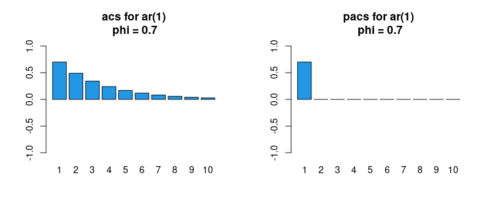
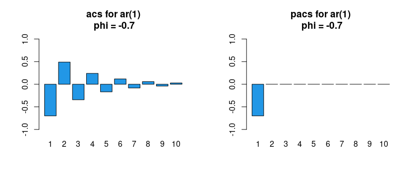
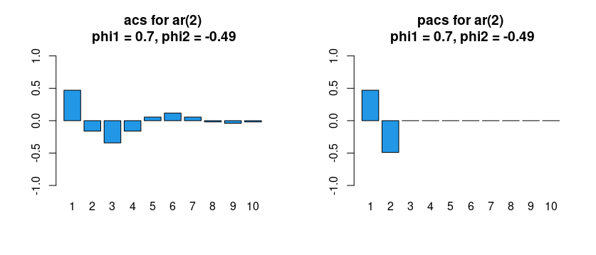
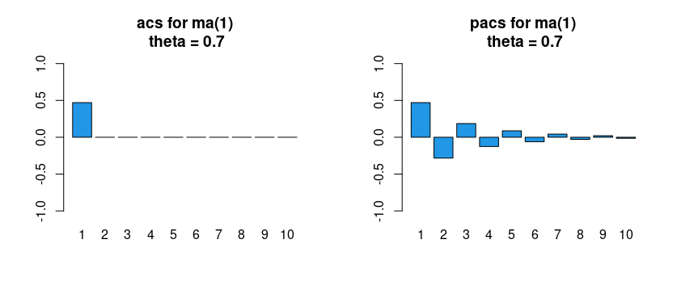
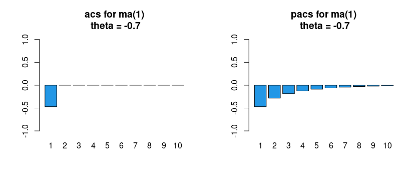
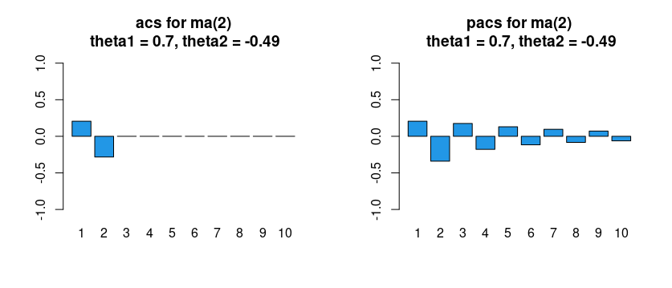
#| '!! shinylive warning !!': |
#| shinylive does not work in self-contained HTML documents.
#| Please set `embed-resources: false` in your metadata.
#| standalone: true
#| viewerHeight: 540
library(shiny)
ui <- fluidPage(
tags$style(HTML("body{font-family:system-ui,sans-serif;}")),
titlePanel("Theoretical ACS and PACS"),
sidebarLayout(
sidebarPanel(
selectInput("model", "Model",
c("AR(1)", "AR(2)", "MA(1)", "MA(2)", "ARMA(1,1)"), "AR(1)"),
sliderInput("phi1", "AR coefficient phi_1", -0.95, 0.95, 0.7, 0.05),
sliderInput("phi2", "AR coefficient phi_2", -0.95, 0.95, 0.0, 0.05),
sliderInput("th1", "MA coefficient theta_1", -0.95, 0.95, 0.5, 0.05),
sliderInput("th2", "MA coefficient theta_2", -0.95, 0.95, 0.0, 0.05)
),
mainPanel(plotOutput("plot", height = "420px"))
)
)
server <- function(input, output) {
output$plot <- renderPlot({
ar <- numeric(0); ma <- numeric(0)
if (input$model == "AR(1)") ar <- input$phi1
if (input$model == "AR(2)") ar <- c(input$phi1, input$phi2)
if (input$model == "MA(1)") ma <- input$th1
if (input$model == "MA(2)") ma <- c(input$th1, input$th2)
if (input$model == "ARMA(1,1)") { ar <- input$phi1; ma <- input$th1 }
acs <- tryCatch(ARMAacf(ar, ma, lag.max = 10, pacf = FALSE)[2:11],
error = function(e) rep(NA, 10))
pacs <- tryCatch(ARMAacf(ar, ma, lag.max = 10, pacf = TRUE),
error = function(e) rep(NA, 10))
names(acs) <- names(pacs) <- 1:10
par(mfrow = c(1, 2))
barplot(acs, ylim = c(-1, 1), main = paste("ACS:", input$model), col = 4)
abline(h = 0)
barplot(pacs, ylim = c(-1, 1), main = paste("PACS:", input$model), col = 4)
abline(h = 0)
})
}
shinyApp(ui, server)Summary and next steps. One extra insight emerges from the plots above: for \(\mathsf{MA}\) models the PACS has no cut-off point but trails off to zero, just like the ACS in an \(\mathsf{AR}\) model. Let us gather our findings.
A finite-order (\(p<\infty\)) causal \(\mathsf{AR}(p)\) process corresponds to an infinite-order \(\mathsf{MA}\) process, and a finite-order (\(q<\infty\)) invertible-in-the-past \(\mathsf{MA}(q)\) process corresponds to an infinite-order \(\mathsf{AR}\) process. This dual relationship is mirrored in the ACS and PACS: the \(\mathsf{AR}(p)\) process has autocorrelations trailing off and partial autocorrelations cutting off, whereas the \(\mathsf{MA}(q)\) process has autocorrelations cutting off and partial autocorrelations trailing off.
\(\mathsf{ARMA}(1,1)\) and beyond
The difficulty in the mixed \(\mathsf{ARMA}\) case is that such a model contains both an \(\mathsf{MA}\) and an \(\mathsf{AR}\) component. The implication is that both the ACS and the PACS exhibit a trail-off pattern. Let us confirm this with a couple of quick plots.
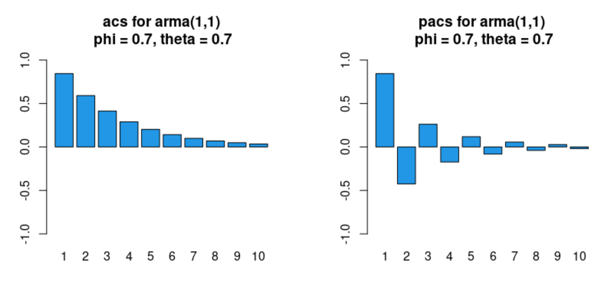
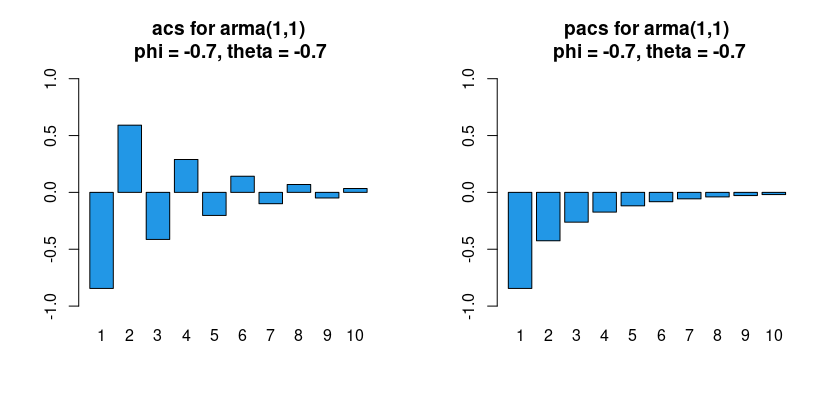
The takeaway is that when there is no obvious cut-off pattern in either the ACS or the PACS, it is likely that we need a mixed \(\mathsf{ARMA}\) process.
How might we determine the orders of \(\mathsf{ARMA}(p,q)\) processes for \(p\) and \(q\) potentially greater than \(1\)? Techniques exist, in principle, to identify \(p\) and \(q\) from the theoretical ACS and PACS. In practice, however, manual identification from the sample ACS and PACS — which deviate from their theoretical counterparts due to sampling error — becomes very difficult. We thus change gears and discuss a more formulaic method.
3 Model selection (formulaic)
The over-arching principle in econometric modelling is to find a model that fits the data “well” using as parsimonious a specification as possible. We therefore need a criterion. We consider two well-known ones:
- Akaike Information Criterion (\(\mathsf{AIC}\)); and
- Bayesian Information Criterion (\(\mathsf{BIC}\)).
Two practical points:
- Remark 1. When we estimate a model using lagged variables, some observations are lost. To compare models correctly, \(T\) should be kept fixed; otherwise we compare performance over non-comparable samples. With \(100\) data points, for instance, we should estimate both the \(\mathsf{AR}(1)\) and \(\mathsf{AR}(2)\) specifications using only the last \(98\) observations, then compare the criteria at a common \(T = 98\).
- Remark 2. Textbooks and software may use different definitions (e.g. SS divide by \(T\); the \(\mathsf{R}\) functions
AIC()andBIC()add the constant \(T(\log(2\pi)+1)\) from the Gaussian likelihood). These differences are immaterial because we use the criteria as relative measures: rescaling and/or adding constants does not change which model minimises a given criterion.
With \(p_{\max} = q_{\max} = 2\), there are 18 distinct specifications to consider: \(\mathsf{ARMA}(0,0)\) with and without a constant, \(\mathsf{ARMA}(1,0)\) with and without a constant, …, up to \(\mathsf{ARMA}(2,2)\) with and without a constant. We select the specification that minimises the criterion. This can be time-consuming by hand, so we may use the \(\mathsf{R}\) package forecast, whose function auto.arima() automatically computes the desired criterion across specifications.
#| '!! shinylive warning !!': |
#| shinylive does not work in self-contained HTML documents.
#| Please set `embed-resources: false` in your metadata.
#| standalone: true
#| viewerHeight: 560
library(shiny)
ui <- fluidPage(
tags$style(HTML("body{font-family:system-ui,sans-serif;}")),
titlePanel("Selecting AR order by AIC / BIC"),
sidebarLayout(
sidebarPanel(
sliderInput("phi", "True AR(1) coefficient", -0.9, 0.9, 0.6, 0.1),
sliderInput("n", "Sample size T", 50, 500, 200, 50),
sliderInput("seed","Random seed", 1, 100, 42, 1)
),
mainPanel(tableOutput("tbl"), plotOutput("plot", height = "260px"))
)
)
server <- function(input, output) {
fit <- reactive({
set.seed(input$seed)
y <- arima.sim(list(order = c(1, 0, 0), ar = input$phi), n = input$n)
pmax <- 5
res <- lapply(0:pmax, function(p) {
m <- tryCatch(arima(y, order = c(p, 0, 0), include.mean = FALSE),
error = function(e) NULL)
if (is.null(m)) return(NULL)
mspe <- mean(m$residuals^2)
k <- p
data.frame(p = p, MSPE = round(mspe, 3),
AIC = round(input$n * log(mspe) + 2 * k, 1),
BIC = round(input$n * log(mspe) + k * log(input$n), 1))
})
do.call(rbind, res)
})
output$tbl <- renderTable({
d <- fit(); d$best_AIC <- ifelse(d$AIC == min(d$AIC), "<-- min", "")
d$best_BIC <- ifelse(d$BIC == min(d$BIC), "<-- min", ""); d
})
output$plot <- renderPlot({
d <- fit()
matplot(d$p, cbind(d$AIC, d$BIC), type = "b", pch = c(1, 2), col = c(4, 2),
xlab = "AR order p", ylab = "criterion value", lwd = 2)
legend("topright", c("AIC", "BIC"), pch = c(1, 2), col = c(4, 2), lwd = 2)
})
}
shinyApp(ui, server)This closes our discussion of model selection. We now turn to estimation, beginning with an important estimator for pure autoregressive processes: the Yule–Walker (YW) estimator. (It will also serve as a ‘pre-estimator’ in the next section.)
4 Yule–Walker estimator for parameters of \(\mathsf{AR}\) models
We have already encountered a consistent estimator for the ACVS of a stationary and ergodic process. Applied to a dataset \(\{ Y_t\}_{t=1}^{T}\), \[ \widehat{\gamma}_h = \frac{1}{T} \sum_{t=1}^{T-|h|} \left( Y_t - \bar{Y}_T \right) \left(Y_{t+|h|} - \bar{Y}_T \right). \] Let us see how to use it to estimate model parameters. We start with the \(\mathsf{AR}\) case and assume (without loss of generality) that \(Y_t\) is a zero-mean process. Consider the causal \(\mathsf{AR}(p)\) model \[ Y_t = \sum_{j=1}^{p} \phi_j Y_{t-j} + \varepsilon_{t}, \quad \text{ where } \varepsilon_t \sim \mathsf{WN}(0,\sigma^2_{\varepsilon}), \] and suppose we wish to estimate the \(p\)-dimensional vector of \(\phi\) parameters as well as the scalar \(\sigma_{\varepsilon}^2\).
For causal \(\mathsf{AR}(p)\) models, YW estimators are consistent and asymptotically normal — but we end our exposition here. Further details are in SS, Chapter 3.5.
5 A glimpse of estimation in the mixed \(\mathsf{ARMA}\) case
Estimation for the pure \(\mathsf{MA}\) case and, by extension, the mixed \(\mathsf{ARMA}\) case can get very complicated (recall that \(\varepsilon_t\) is unobserved), and a full treatment is beyond the scope of this course. Nevertheless, it would be remiss not to give you a flavour. We briefly outline one intuitive procedure: the Hannan–Rissanen (HR) algorithm.
The YW estimator is nothing but the method of moments estimator (MME) applied in a time series context; it serves as the pre-estimator in the HR algorithm. The HR algorithm additionally uses OLS, so let us first recap OLS in a time series context.
That concludes our discussion of estimation for an \(\mathsf{ARMA}(p,q)\) model. We have only scratched the surface: we have not discussed maximum likelihood estimation (MLE), the properties of the various estimators, hypothesis tests, confidence intervals, or diagnostic checking. Nevertheless, we have built a strong base for future study.
6 Review questions
- What are the conceptual similarities and differences between the ACS and the PACS? How do we use these tools for model selection?
- What are the conceptual similarities and differences between the \(\mathsf{AIC}\) and the \(\mathsf{BIC}\)? How do we use these tools for model selection?
- Describe the Yule–Walker (YW) estimator of the coefficients of a pure autoregressive process. You may use the \(\mathsf{AR}(1)\) model as an example. Explain, in your own words, why the YW estimator is effectively the method of moments estimator.
7 Further reading
- Concepts covered in this topic are scattered throughout SS, Chapters 1 and 3 (YW details in Chapter 3.5).